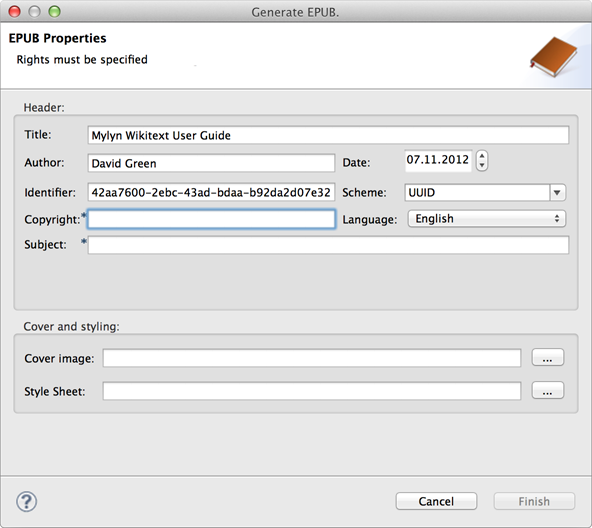

Lightweight wikitext markup can easily be converted into EPUBs. From within Eclipse right click on any supported markup file (ending in *.textile, *.mediawiki etc), then select Wikitext > Generate EPUB from the context menu. This will bring up a wizard as illustrated below.

As the EPUB specification requires that certain properties are set for a publication – this dialog will offer the user interface for setting these. In addition to those that are already filled in you will have to enter a title, language and subject. Required properties are marked with an asterisk.